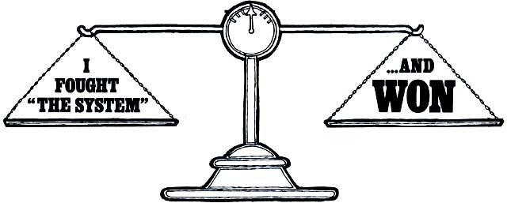
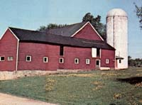
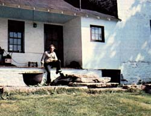
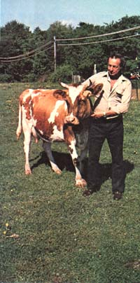

There's an old American proverb (you probably first heard it in grade school)that says: dictum, you should n't try even try to confront the Powers That Be ... because "you can't win".
"I guess I never learned that proverb," says John A. Kolezynski of Long Valley, New Jersey," Beacuse when the creameries - and the Department of Health-in my state conspired to me out of the fdairy bussiness, I was 'dumb' enough to fight back. And when I did I found out something interesting about the American system of justice: It still works. Sometimes."
On April 15, 1974, I received a summons to appear in court. I was being sued by the state of New Jersey.
Specifically, I was charged with violating a state law which read: "No person shall sell or distribute to the ultimate consumer any milk, cream, or other unpasteurized dairy product that is not certified." On May 10, 1974 (the summons said) I was to appear before his honor, Judge Robert H. Muir, Jr., at the Morris County Superior Court, to receive a "cease and desist" order.
I'm a dairy farmer. (Have been since 1947.) And I enjoy what I do ... but I've never harbored any desire to become a giant in the world of agribusiness. I've never wanted to become a "big-time" dairy farmer ... although when I was younger, that was what I thought I had to do to keep my business profitable.
Back in the fifties, my wife and I expanded our operation from 13 to 50-some-odd cows (and mortgaged the better part of our lives to buy 123 acres of land). At our peak, we managed a herd that produced a ton of milk per day.
What we couldn't understand at the time, though, was why-in the process of becoming bigger -we'd also become poorer . We were in debt up to (and beyond) our ears, and while most of the rest of the nation enjoyed prosperity, we lived in a depression ... as did millions of other farm families who were trying desperately to hold onto their land.
We were luckier than many of the others, though. We got out of debt ... by selling most of our land. (Notice that it was not our production -our milk-that paid off our debts, but our means of production: our cows and our land.) A funny thing happened, though, when we became smaller: We also became more efficient.
The System, however, doesn't reward efficiency (on a small scale) ... as I learned on February 28, 1972, when I received a registered letter from my creamery stating that-because of my herd's small output (250 pounds daily)-they would no longer pick up my milk. I had 60 days (the letter said) to find another market for it.
Upon receiving my "layoff" notice from the creamery, I immediately began to get in touch with other creameries. And, to my amazement and dismay, they all told me the same thing: "Make more milk, and we'll take you on."
I wrote to New Jersey Secretary of Agriculture Phillip Alampi to see if maybe he could find a market for my milk. He wrote back to say that he couldn't locate a creamery that would pick up such a small volume. A few days later, I wrote Mr. Alampi again to ask whom I could contact with regard to having my milk certified (so I could sell it myself) ... and he was kind enough to send me a list of names. I contacted everyone on the list, but the answer was the same: my production was too small to bother with.
As a last resort, I wrote to the Governor and explained my situation. His answer (which I received via the Secretary of Agriculture) was, "It's distressing that we in government do not have a solution to the problems that you are now facing, but don't you dare sell raw milk."
My 60 days were nearly up at this point and-as yet-I had found no new buyer for my small farm's product. "I guess we'll have to go on welfare pretty soon," I told my wife. "Because after May first, we aren't going to have an income."
Around the middle of April, my wife and I did go down to the Morris County welfare office, where we filled out a large application form. When we turned it in, the clerk told me to sign up for work at the New Jersey Employment Security office ... which was where we went next.
Now, when you sign up for employment you have to list your occupation on a card ... and a clerk then has to find the proper code number to match the occupation you've indicated. Naturally, I put down "farmer" as my occupation ... but-and here's catch-22-after searching through two gigantic code books, the clerk who waited on me said "There's no code number given for 'farmer'. What else can you do?" He ended up putting me down as a maintenance man's helper (or some such). Here I was, a farmer-top man in the agrarian system-reduced to low man in the industrial class by some cockamamie law. I couldn't believe it.
But there's more. When I went back to the welfare office, the clerk there told me: "Sell your cows, and when you've used that money up, then we can help you."
Needless to say, I did a lot of deep thinking at home that night. More than anything, I was stunned by the sheer irony of the situation. New Jersey officials are supposedly "concerned" these days about the state's losing what few farm families it has left ... yet here I was-a small farmer being forced out of business, pleading for help-and no one, from the Governor on down to the lowest welfare office clerk, seemed to give a damn. "Incredible," I thought to myself. "Just incredible."
May 1 finally came. And as I watched the milk tank truck pull out of my farm for the last time, I saw go with it a life's work. For I now had no market for my milk, no in come, no job, no unemployment benefits, no welfare... nothing, except a six-acre farm, 13 cows, 50 chickens, a wife, three children, and a dream I'd first dreamed when I was eleven years old.
At this point, I was faced with a hard decision: Should I buckle under to Big Business and Big Government ... or should I hold my ground, stand up for my rights, and risk the consequences?
Well, it seemed to me that [1] the creameries had no right to dictate the size of my farm (which-in essence-is exactly what they were trying to do), and [2] the state had no right both to forbid me to sell uncertified milk to the consuming public AND refuse (simply because my output was "too small") to even consider certifying my milk (which was exactly what the Department of Health had done). I felt fully justified, then, in taking the only course of action that seemed right to me ... which was to begin selling my cows'milk on the open market (that is, direct to consumers).
So I began selling 100% natural raw milk on my farm, and-thanks to word of mouth advertising-I enjoyed surprisingly brisk business for over a year. One day, however, the inevitable happened: Department of Health officials appeared at the door and told me to stop.
"What else can I do?" I asked them. "This is the only way I have to make a living-an honest living-from the land, raise a family, and pay taxes. I've contacted everyone in this state from the Governor on down and no one will lift a finger to help me. This is all I have. I have absolutely no other choice ... no other way to live."
But the officials who visited us were not interested in hearing about the Kafka situation we were in. They didn't care. They had a job to do. I was violating a state law. They had to shut me down.
And, of course, there wasn't any way I could shut down ... not if I wanted to keep feeding my family. So the officials came back, again and again. And every time they visited my farm, they cranked the pressure we were living under up another notch. The whole power of the state of New Jersey, in short, was increasingly brought to bear on my little farm. And, finally, I was sued by the state and told to appear in court.
My wife, unable to cope with the strain we were under, committed suicide. And that left me really alone ... alone with three children to raise and a whole state treating me like a common criminal. And all because I was merely trying to make a small living in the only way I could ... by selling a natural and unadulterated product to people who were eager to buy it.
When it'd become evident that the Department of Health was taking my case seriously, I started to look for legal help.
First, I contacted the American Civil Liberties Union ... and was told I didn't have a chance. Then I went to the Morris County Legal Aid Society ... but-because I wasn't a card-carrying welfare recipient-they too refused to help me. More catch-22's.
Finally, some neighbor-friends of mine got in touch with their lawyer, who in turn recommended that I contact an attorney by the name of George J. Benson. I went to see him, and took with me a bagful of letters I'd accumulated over the past year.
Mr. Benson seemed skeptical at first when I told him that the state intended to sue me ... but when I produced fistfuls of correspondence (from the Governor's office, the Secretary of Agriculture, the Medical Milk Commissioner, the Milk Program Project Coordinator, the Department of Health, the Welfare Department, and the Employment Security office), his eyes immediately lit up. I think he knew then that we had a case.
Without further ado, I set about informing the local media of my situation. And before long, I was swamped with newspaper reporters. (I hit front page in many papers, and was even interviewed for an eight-minute spot on a local TV news program.)
Of course, most people thought I was tilting at windmills. Well-meaning friends and acquaintances told me: "John, you can't fight government. You're wasting your time and money. They'll only wear you down." Maybe ... but if you believe in basic human rights, you stand up for those beliefs just as Washington, Adams, and others did two centuries ago. ("Eternal vigilance," as Jefferson-I believe-said," is the price of liberty.")
For one reason or another, my trial date was postponed three times (so that instead of going to court in May of 1974, I was to appear-finally-on January 6,1975). And, in between postponements, I wrote many letters to the editors of New Jersey newspapers. The following example-dated December 29, 1974-is representative of the letters I sent, and of my feelings at the time.
To the editor,
On January 6, 1975, my constitutional right to sell the organic-product made by the cows on my farm will be on trial
I am a small dairy farmer with an increasing market for my natural milk. The state of New Jersey, however, tells me that I may only sell my milk to designated buyers: that is, to the creameries they license to pasteurize milk. These are the same creameries that laid me off in 1972 on the grounds that I didn't produce enough milk for them. In other words, then, the creameries are dictating the size my herd must be. I contend that they are violating my right to sell my product on the open market.
I am engaged in the production of food, a lawful business that all governments recognize. There is no law stating how large a farm must be in this country, but the creameries (a part of the private sector) have taken it upon themselves to try to force me to expand ... even though my farm is already at the proper size (six acres) for optimum economic efficiency.
The laws that guarantee the creameries (the processors) the power to control dairy farmers (the producers) in this way are overriding the Constitution ... and it this power is not challenged, the Constitution itself is weakened and thus in danger of losing its meaning.
I believe I may be the first farmer ever to go on trial over the right to be a farmer. If the court says that I am committing a crime against the state by selling natural milk (for which there is a real demand) to people who want to buy it, then we have a dictatorship form of government and NOT the kind of democracy established by our founding fathers. If the courts dictate who can or cannot be a farmer, then this is the beginning of the end of our democracy.
This is what I am on trial for and fighting to preserve ... our Constitution, and individual rights.
John A. Kolezynski
Finally-on January 6, 1975-I went to court to defend my rights. Also there for the occasion were the state's Deputy Attorney General in charge of the case, representatives for the milk industry and the Department of Health, and my lawyer.
Mr. Benson (my attorney) had prepared a good case. He was ready to argue-among other things-that the so-called "state law" which forbade me to sell uncertified milk was, in fact, nothing more than a Department of Health edict (dating back to 1913) that had never been enacted into law by the New Jersey legislature. The state, in other words, had no power to force me (or anyone else) to apply for certification before selling milk.
As it turned out, though, there was no hearing. Mr. Benson-after meeting in private with representatives of the state and the dairy industry-returned to his chair and told me that all charges had been dropped. The state had agreed (out of court) to allow me to go on selling raw milk. I had-in effect-"won" the case.
So: Although the Department of Health edict concerning the certification of milk is still on the books (and will be until a judge declares it illegal) ... I am now the only dairy farmer in New Jersey who is allowed to sell natural (raw) milk.
It's funny: Millions of farmers were forced out of business in the 50's by the very same "get big or get out" tactics that the creameries had applied to me in the 70's. But when they tried to put the squeeze on me , I challenged the legality of what they were doing ... and won .
Unfortunately, mine is just an individual case. Since I settled out of court, the Department of Health's antiquated and illegal "laws" still stand, and any farmer who wishes to escape their tyranny must-as I did-wait to be taken to court, then fight his own battle.
I like to think, however, that I've shown that it is possible to fight such a battle. That-contrary to what everybody told me, and what everyone seems to believe these days-you CAN fight city hall. Believe me, you don't know that you can't until you try.
Anyone who wants to is welcome to visit my farm at 153 Zellers Road in Long Valley, New Jersey ... whether to buy milk or just to talk. (Or to inspect the 200-year-old stone house I'm presently restoring and-at the same time-living in.)
Most people who come to my place tell me they feel the "inner peace" and "strength" and "energy" that (apparently) radiate from me. All I know is, I'm content to live the lifestyle I've chosen to live ... the way of life that I've successfully fought to protect.
|
 The authors fully restored 19th century barn |
 John Kolezynski sits on the back porch of his nearly 200-year-old stone house. ""Little by little, "" says John, ""I'm taking the stucco off the house to expose the beautiful stonework underneath. "" |
 The author poses with Gina, one of 14 Jerseys and Guernseys in his present herd |
|
 |
|
|